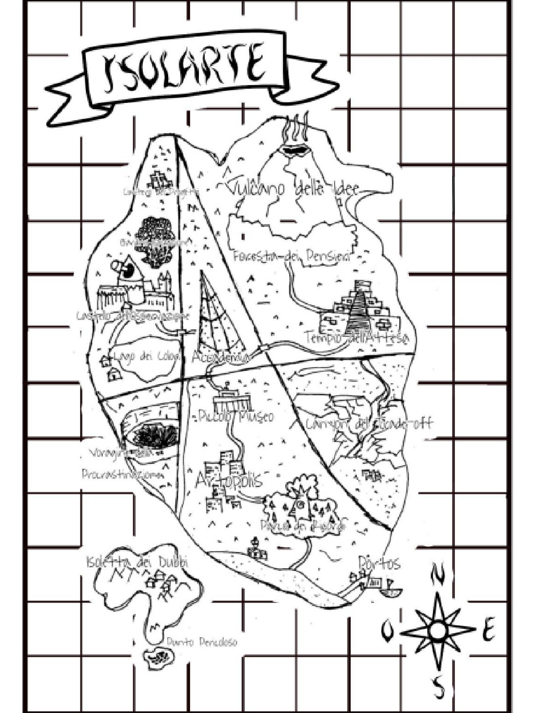
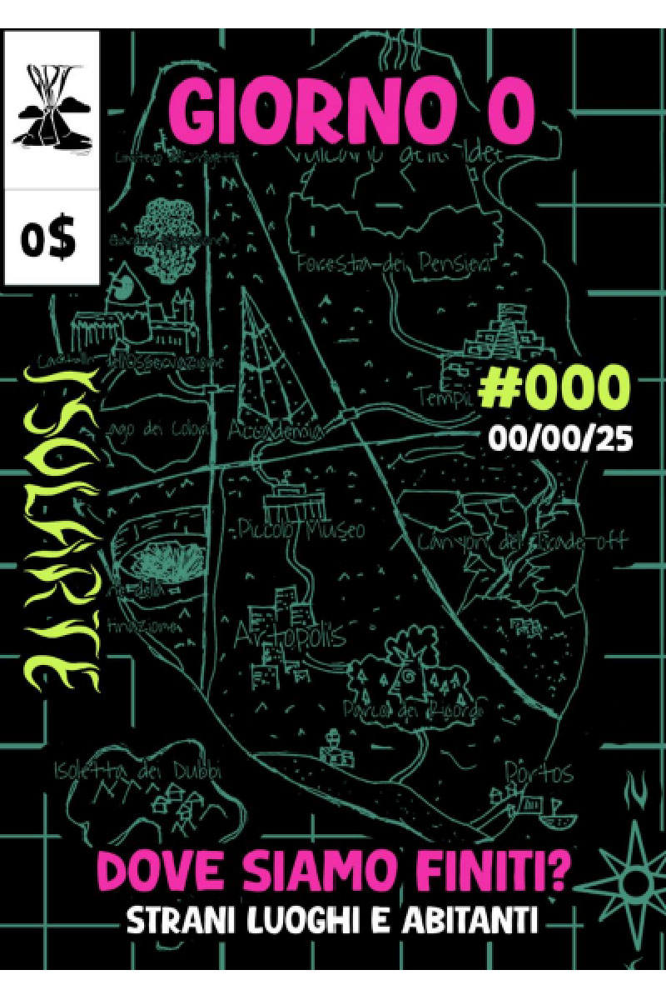
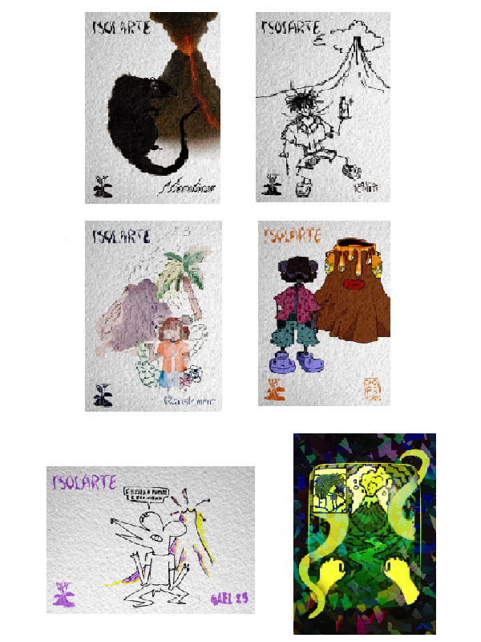
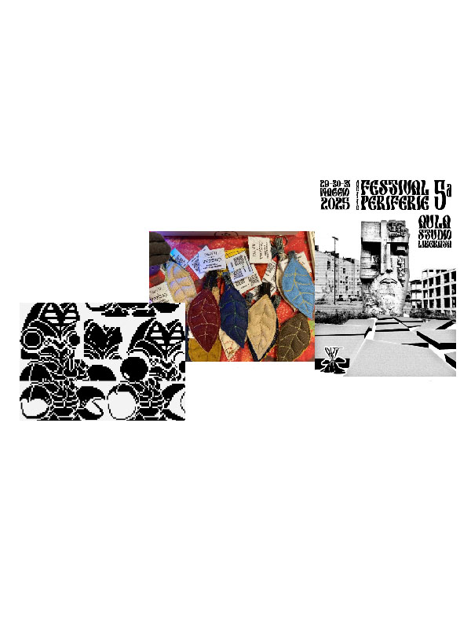

Isolarte è un progetto multiculturale e multimediale che si svolge prettamente sul territorio, per diffondere cultura, arte e informazione in modo libero, accogliendo chi non ha la possibilità di diffondere le proprie creazioni o è troppo timid* per farlo[cite: 1].
Tutto si svolge su Isolarte, la terra degli artisti[cite: 1]. Ogni location è uno step che l'artista deve raggiungere per arrivare alla creazione di un pezzo artistico: dal Vulcano delle Idee al Tempio dell'Attesa, passando per la Foresta dei Pensieri e Artopolis[cite: 1].
Ogni artista arriva su Isolarte un po' per caso, per poi decidere se rimanere o andare via[cite: 1].


Riprendiamo il concetto storico di fanzine per unire l'informazione libera all'esplorazione narrativa del mondo dell'isola[cite: 1]. La lore si sviluppa sia nell'edizione fisica sia sul profilo Instagram[cite: 1].
Il giornaletto è e sarà sempre gratuito[cite: 1]. Per autofinanziarlo realizziamo merchandising a basso costo e spirito punk: spille, cartoline, portachiavi, collane e t-shirt[cite: 1].
Dalle cartoline con la mascotte Isotopo agli eventi e progetti sul territorio[cite: 1].

La mascotte di Isolarte reinterpretata in molteplici stili dagli artisti della nostra rete (tra cui Gael, Niccolines, Katia, soste.mere, DOPE)[cite: 1].

Collaborazioni attive per copertine, merchandise e poster: portachiavi con Versup, copertine con Plaguelabs e memorabilia per il Festival delle Periferie con l'Aula Liberata[cite: 1].